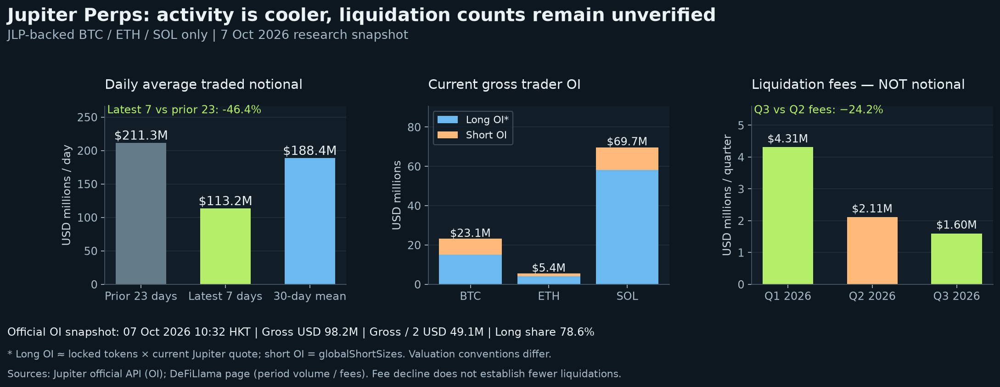
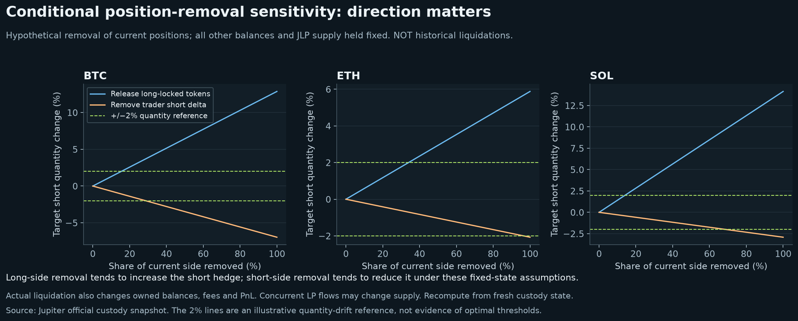
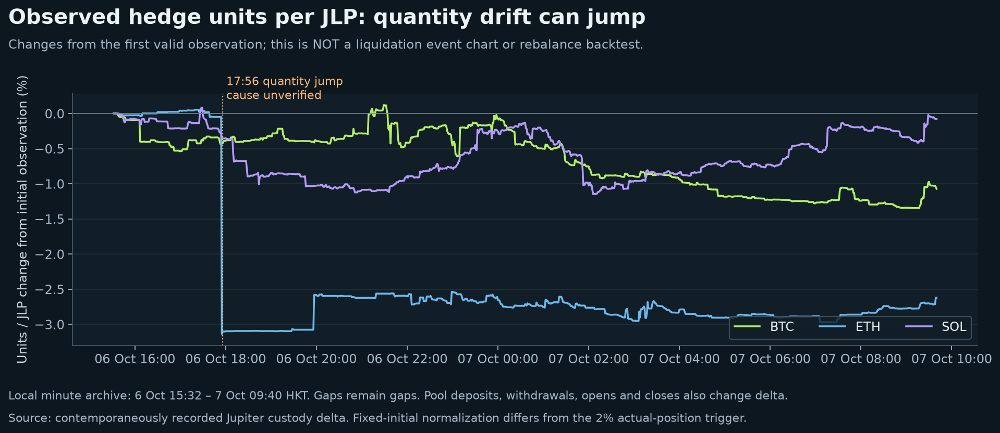

Research snapshot: 7 October 2026. Trading volume has declined, but average daily turnover remains above $100 million. Positions are concentrated in longs. Lower liquidation fees do not establish that recent liquidation events are rare. This analysis covers the BTC, ETH and SOL markets backed by JLP.
The DeFiLlama protocol page, queried on 7 October, reported $792.67 million over seven days and $5.653 billion over 30 days. Average daily volume was $113.24 million in the latest seven days versus $211.32 million in the preceding 23 days: a 46.4% decline. Relative to the overlapping 30-day average, the decline was 39.9%.
Jupiter's official three-market snapshot at 07 Oct 2026 10:32 HKT reported $149.86 million of trailing 24-hour volume. Different timestamps and update conventions prevent direct reconciliation with DeFiLlama. The chart shows period averages, not daily observations. Repeated rolling 24-hour readings must not be summed into daily volume.

Official snapshot, USD millions:
| Market | 24h volume | Long OI estimate | Short OI | Gross OI | Long share |
|---|---|---|---|---|---|
| BTC | 25.61 | 15.10 | 8.02 | 23.12 | 65.3% |
| ETH | 19.47 | 4.02 | 1.39 | 5.41 | 74.3% |
| SOL | 104.78 | 58.13 | 11.56 | 69.70 | 83.4% |
| Total | 149.86 | 77.25 | 20.97 | 98.22 | 78.6% |
Long OI is estimated as locked tokens × current Jupiter price; short OI uses globalShortSizes. These valuation conventions differ. See Jupiter custody fields. SOL accounts for approximately 71.0% of gross OI; this concentration alone cannot predict individual liquidation risk or rebalance frequency.
The DeFiLlama OI adapter reconstructs positions from events, applies its price source and divides combined long and short OI by two. Our gross/2 reference is $49.11 million, versus approximately $49.28 million on its page at a different timestamp. It is not an exact replication. Local OI history starts on 7 October; a single snapshot cannot establish an OI trend.
DeFiLlama's revenue table reported liquidation fees of $4.31 million in Q1, $2.11 million in Q2 and $1.60 million in Q3 2026. Q3 was 24.2% below Q2. Quarterly fees cannot establish recent weekly event counts or liquidated position notional. Fees have no fixed ratio to position size. See Jupiter liquidation mechanics.
The live dashboard now collects finalized Jupiter trader liquidation events directly from Solana, with market, long/short side, notional, execution price, fee and transaction link. Coverage starts at the collector's baseline; earlier periods remain unobserved. Missing fields and source outages are marked explicitly. Changes in OI alone cannot distinguish liquidation from voluntary closing or price effects.
Reduced activity and fees do not prove positions are safe. Jupiter trader liquidations, JLP collateral-loan liquidations and Hyperliquid hedge liquidations are separate risks; this feed covers the first.
The first-order token hedge quantity per JLP is:
hᵢ = (ownedᵢ − lockedᵢ + shortSizeᵢ / shortAveragePriceᵢ) / JLP supply
Every input must be refreshed after position changes. Holding other balances and supply fixed, closing longs releases locked tokens and increases the short hedge target; closing shorts removes the short delta term and reduces it. Actual liquidations also settle collateral, PnL and fees, changing owned balances. LP issuance and redemption can change supply. These directions are conditional, not universal event outcomes.
The sensitivity chart removes 0–100% of each current position side while holding other inputs fixed. The fraction required for a 2% change relative to the pre-event hedge is:
| Market | Long locked tokens released | Short delta removed |
|---|---|---|
| BTC | 15.5% | 28.7% |
| ETH | 34.0% | 96.5% |
| SOL | 14.1% | 68.7% |
These values describe sensitivity, not a liquidation forecast. Their denominator also differs from the strategy's deviation threshold measured against the latest target.

Compare actual filled hedges with current targets. Evaluate rebalancing when any token's quantity deviation reaches 2%, or the sum of absolute residual USD exposures reaches 1% of total strategy NAV. NAV includes Hyperliquid margin, with initial hedge leverage of 10×. Signed exposures across tokens should not cancel each other in the residual-risk calculation.
A liquidation calls for a fresh target calculation; event size alone does not determine a trade. The dashboard observes and calculates, without executing orders. A five-minute cooldown, two consecutive confirmations and minimum order size can delay response. Bypassing the cooldown after a 1% residual-exposure breach remains a separate, unvalidated stress-test scenario.
The saved 18-hour sample contained an ETH hedge jump; deviation was approximately 3.20% at the 17:56 confirmation. Without contemporaneous event records, liquidation cannot be assigned as its cause. Selective-rebalance replay with a $10 minimum order triggered 3, 5 and 9 rebalances at 2×, 5× and 8× JLP leverage. This used fixed JLP quantity, fixed initial capital and minute observations; it is not a net-profit backtest with liquidation shocks and actual execution costs.

Further evaluation should align liquidation events, pool state, targets, fills and Hyperliquid prices, measuring deviation, absolute exposure, breach duration and costs over 1/5/15-minute windows. Minute archives cannot reconstruct intraminute peaks or second-level response, and this short sample cannot establish annual rebalance frequency.
Lower volume can reduce trading fees; OI and utilization affect borrowing fees; lower liquidation fees reduce that contribution. Compare contemporaneous fees with AUM rather than applying volume declines directly to JLP APR. Liquidation penalties already included in fee yield must not be added again. Separate fee yield from pool price changes and trader PnL. See JLP yield definitions.
Positive funding does not always cover USDC borrowing costs. Retain a stress scenario with fee APR halved and Hyperliquid funding at zero, alongside liquidation-driven rebalance costs.